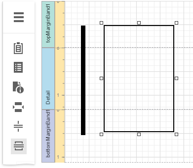
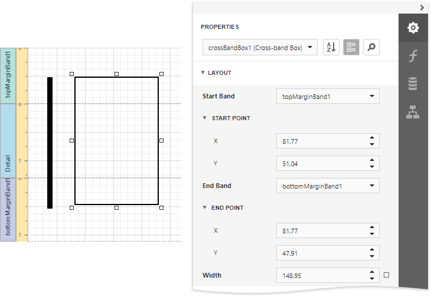
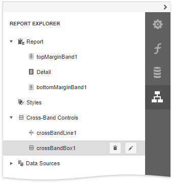

Draw Cross-Band Lines and Boxes
Cross-band controls allow you to draw lines and rectangles through several report bands.
The Report Designer provides the following two cross-band controls:
- The Cross-Band Line control draws vertical lines that can span multiple report bands. You can use this control to emphasize a report area that consists of different bands.
- The Cross-Band Box control draws rectangles through several report bands. You can use this control to encompass a report section that includes multiple band areas.
To add a cross-band control to a report, select the corresponding item in the Toolbox and draw a rectangle across required bands.

The following properties define a cross-band control's location in a report:
- Start Band - determines the band from which the control starts to draw;
- Start Point - specifies the exact coordinates (measured in report units) within the start band where the control starts to draw;
- End Band - determines the band where the cross-band control stops to draw;
- End Point - specifies the exact coordinates (measured in report units) within the end band where the control finishes to draw.

The following image illustrates how the Report Explorer reflects cross-band controls:
